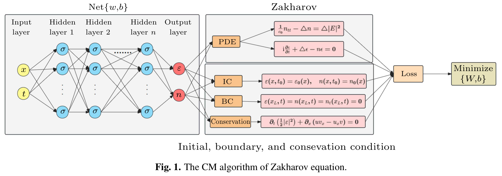
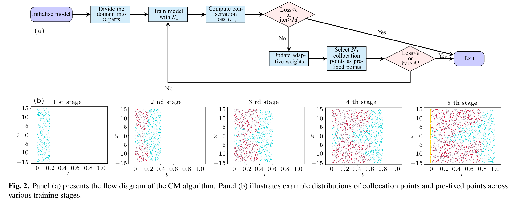
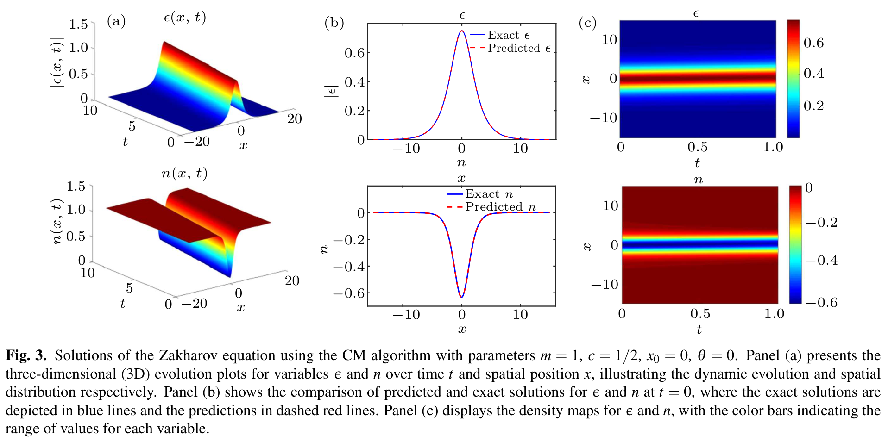
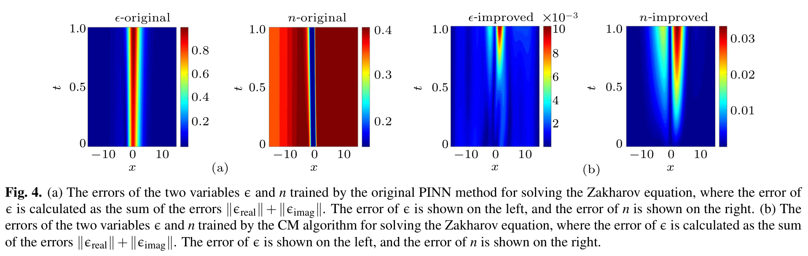
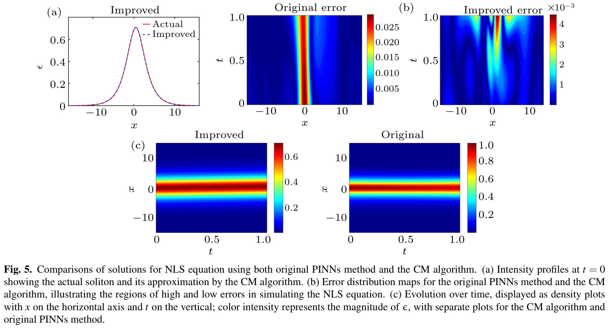
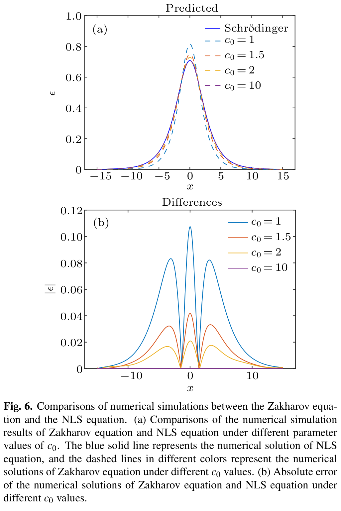

论文精读 · 数值 PDE / PINN / 非线性波 · 阅读与来源核查：2026-10-03
守恒约束与分阶段训练：CM-PINN 的收益和复现疑点
Modified PINN approach integrating conservation laws for efficient multi-stage training of coupled nonlinear systems
Jie Deng（邓婕）、Lijia Han（韩励佳） · 华北电力大学 · Chinese Physics B 35(4), 040202 (2026)10.1088/1674-1056/ae030b · 期刊页面 · 作者代码
核心判断： 作者将局部质量守恒损失、逐步扩展的配置点集合、旧阶段预测固定点和梯度自适应权重组合起来。在文中所报的一维孤子算例上，组合方案 A4 的误差和训练时间优于 A1–A3。但原文实虚部分解、声速系数、解析孤子和公开代码之间存在需要厘清的不一致，因此这些结果应理解为作者报告的特定算例表现 ，尚不能当作已独立验证的 Zakharov 求解精度、物理稳定性或普遍加速定理。
阅读范围：用户提供的期刊 PDF 共 11 页，PDF 第 1 页为封面，第 2–11 页为印刷页 040202-1 至 040202-10。以下定位统一用 PDF 页码 。已读正文、算法、全部图表与参考文献定位；该 PDF 无附录。期刊页面显示 Supplements (0)，未发现单独补充文件。代码静态核查单独说明，不与 PDF 的图号和数据混用。报告包含全部 6 幅编号原图、3 张原表及 Algorithm 1 的步骤解释。
目录 1. 为什么做：难点和贡献的准确范围 2. 方程、守恒与极限：先核对求解对象 3. 怎样训练：从输入到分阶段固定点 4. 结果：哪些改善有数据，哪些尚待验证 5. NLS 算例与高声速极限：辨清验证层次 6. 全部原图与逐图解释 7. 公开代码静态核查：修正了什么，仍缺什么 8. 批判性评价：如何使用这篇论文的证据 9. 可借鉴的做法：对象、前提、迁移与失败条件 10. 后续研究：先修复可复现性，再测试机制和极限 11. 材料覆盖、来源与复现边界 原图索引： 图 1 · 图 2 · 图 3 · 图 4 · 图 5 · 图 6
原表与算法： 表 1 · 表 2 · 表 3 · Algorithm 1
1. 为什么做：难点和贡献的准确范围
Zakharov 模型把高频 Langmuir 波的复振幅与低频离子密度扰动耦合起来。孤子既要维持局域化波形，又要同时满足色散、非线性反馈与初边值条件。普通 PINN 用一个网络拟合整个时空区域，并把不同残差直接相加；对尖峰、强耦合以及不同梯度尺度，这种优化可能难以找到兼顾各项约束的参数。（PDF 第 2–4 页，§1–2.1）
论文的贡献是一个训练策略组合 ，不是新的 Zakharov 方程、独立守恒律或 NLS 极限定理。作者把已有的 pre-fixed multi-stage 训练、自适应权重和守恒损失用于这一耦合系统，并与原始 PINN、只加守恒项、只用多阶段策略比较。文中引用 Mo 等的多阶段方法 [29]、Wang 等的梯度权重方法 [28]、守恒学习方法 [33–35]；这些引用说明策略有明确来源。本报告未做完整新颖性检索，不重复作者“尚无研究”的优先权表述。（PDF 第 3、11 页）
需要把作者的动机与实验覆盖分开：文中讨论高维求解、避免网格成本以及真实物理实验，但实际展示的是一维、已知解析孤子、短时窗的前向拟合 。没有与有限差分、谱方法或有限元求解器的同精度计时对比，也没有高维实验。因此目前最值得借鉴的是如何组织训练，而不是“PINN 已普遍优于传统数值方法”。（PDF 第 2–3、7–10 页）
2. 方程、守恒与极限：先核对求解对象
2.1 原始耦合系统及初边值条件
原文式 (1)、(3) 的一维系统为：
{ c 0 − 2 n t t − n x x = ( ∣ ϵ ∣ 2 ) x x , i ϵ t + ϵ x x − n ϵ = 0. (1,3)
\begin{cases}
c_0^{-2} n_{tt}-n_{xx}=(|\epsilon|^2)_{xx},\\
\mathrm{i}\epsilon_t+\epsilon_{xx}-n\epsilon=0.
\end{cases}\tag{1,3}
{ c 0 − 2 n tt − n xx = ( ∣ ϵ ∣ 2 ) xx , i ϵ t + ϵ xx − n ϵ = 0. ( 1,3 ) 这里 ϵ ( x , t ) \epsilon(x,t) ϵ ( x , t ) n ( x , t ) n(x,t) n ( x , t ) c 0 c_0 c 0 x , t x,t x , t n n n ϵ 0 , n 0 , n 1 \epsilon_0,n_0,n_1 ϵ 0 , n 0 , n 1 n 1 = n t ( ⋅ , t 0 ) n_1=n_t(\cdot,t_0) n 1 = n t ( ⋅ , t 0 )
x ∈ [ − x L , x L ] , t ∈ [ t 0 , t T ] , ϵ ( x , t 0 ) = ϵ 0 ( x ) , n ( x , t 0 ) = n 0 ( x ) , n t ( x , t 0 ) = n 1 ( x ) .
\begin{aligned}
&x\in[-x_L,x_L],\quad t\in[t_0,t_T],\\
&\epsilon(x,t_0)=\epsilon_0(x),\quad n(x,t_0)=n_0(x),\quad n_t(x,t_0)=n_1(x).
\end{aligned}
x ∈ [ − x L , x L ] , t ∈ [ t 0 , t T ] , ϵ ( x , t 0 ) = ϵ 0 ( x ) , n ( x , t 0 ) = n 0 ( x ) , n t ( x , t 0 ) = n 1 ( x ) . 式 (3) 边界行只写 x L x_L x L ± x L \pm x_L ± x L x L = 15 x_L=15 x L = 15 ϵ \epsilon ϵ n n n n t − n 1 n_t-n_1 n t − n 1 n t n_t n t
2.2 实虚残差：原文与直接分解不一致
令 u = Re ϵ u=\operatorname{Re}\epsilon u = Re ϵ v = Im ϵ v=\operatorname{Im}\epsilon v = Im ϵ ϵ = u + i v \epsilon=u+\mathrm{i}v ϵ = u + i v ∣ ϵ ∣ 2 = u 2 + v 2 |\epsilon|^2=u^2+v^2 ∣ ϵ ∣ 2 = u 2 + v 2
f r e a l p r i n t = u t − v x x + n v , f i m a g p r i n t = v t + u x x − n u , g p r i n t = c 0 − 1 n t t − n x x − ( u 2 + v 2 ) x x . (6)
\begin{aligned}
f_{\mathrm{real}}^{\mathrm{print}}&=u_t-v_{xx}+nv,\\
f_{\mathrm{imag}}^{\mathrm{print}}&=v_t+u_{xx}-nu,\\
g^{\mathrm{print}}&=c_0^{-1}n_{tt}-n_{xx}-(u^2+v^2)_{xx}.
\end{aligned}\tag{6}
f real print f imag print g print = u t − v xx + n v , = v t + u xx − n u , = c 0 − 1 n tt − n xx − ( u 2 + v 2 ) xx . ( 6 ) 这不是式 (1) 按通常实虚定义得到的分解。直接代入式 (1)，应有：
f u = u t + v x x − n v , f v = v t − u x x + n u , g = c 0 − 2 n t t − n x x − ( u 2 + v 2 ) x x . (check)
\begin{aligned}
f_u&=u_t+v_{xx}-nv,\\
f_v&=v_t-u_{xx}+nu,\\
g&=c_0^{-2}n_{tt}-n_{xx}-(u^2+v^2)_{xx}.
\end{aligned}\tag{check}
f u f v g = u t + v xx − n v , = v t − u xx + n u , = c 0 − 2 n tt − n xx − ( u 2 + v 2 ) xx . ( check ) 两个独立疑点： 实虚方程中的色散和耦合符号相反；密度方程的系数从 c 0 − 2 c_0^{-2} c 0 − 2 c 0 − 1 c_0^{-1} c 0 − 1 ϵ = u − i v \epsilon=u-\mathrm{i}v ϵ = u − i v 第 7 节 。c 0 = 1 c_0=1 c 0 = 1
2.3 守恒项究竟约束什么
式 (14) 给出一般局部守恒损失，C C C F F F
L c = 1 N c ∑ j = 1 N c [ C t ( x f j , t f j ) + ∇ ⋅ F ( x f j , t f j ) ] 2 . (14)
\mathcal L_c=\frac1{N_c}\sum_{j=1}^{N_c}\left[C_t(x_f^j,t_f^j)+\nabla\cdot F(x_f^j,t_f^j)\right]^2.\tag{14}
L c = N c 1 j = 1 ∑ N c [ C t ( x f j , t f j ) + ∇ ⋅ F ( x f j , t f j ) ] 2 . ( 14 ) C = 1 2 ( u 2 + v 2 ) , F = u v x − v u x , C t + F x = 0. (19)
C=\tfrac12(u^2+v^2),\qquad F=uv_x-vu_x,\qquad C_t+F_x=0.\tag{19}
C = 2 1 ( u 2 + v 2 ) , F = u v x − v u x , C t + F x = 0. ( 19 ) 质量密度来自复波振幅，通量来自实虚场及其空间导数；这不是密度扰动 n n n
d d t ∫ − x L x L C d x = − [ F ] − x L x L .
\frac{\mathrm d}{\mathrm dt}\int_{-x_L}^{x_L}C\,\mathrm dx=-\left[F\right]_{-x_L}^{x_L}.
d t d ∫ − x L x L C d x = − [ F ] − x L x L . 只有边界通量相消或为零，域内总质量才守恒。理想齐次 ϵ \epsilon ϵ
对上面与式 (1) 一致的残差，有一个很有用的恒等式：
r c = C t + F x = u u t + v v t + u v x x − v u x x = u f u + v f v .
\begin{aligned}
r_c&=C_t+F_x\\
&=uu_t+vv_t+uv_{xx}-vu_{xx}\\
&=u f_u+v f_v.
\end{aligned}
r c = C t + F x = u u t + v v t + u v xx − v u xx = u f u + v f v . 读者推导： 这个局部守恒式是 Schrödinger 方程的后果，不能被描述为独立增加了一条物理方程。对近似网络，额外损失仍可能改变优化几何、增强高振幅区域的残差约束并改善梯度平衡，所以“数学冗余”不等于“训练无用”。但要证明收益来自守恒信息本身，应与等价残差组合或幅值加权项比较；原文没有这种消融。
2.4 解析孤子也需要代入核查
原文式 (17)、(18) 使用行波 ξ = x − c t − x 0 \xi=x-ct-x_0 ξ = x − c t − x 0
ϵ = A sech ( B ξ ) exp [ i ( c 2 x + D t + θ ) ] , n = − A 2 sech 2 ( B ξ ) .
\epsilon=A\operatorname{sech}(B\xi)\exp\!\left[\mathrm i\left(\tfrac c2 x+Dt+\theta\right)\right],\qquad
n=-A^2\operatorname{sech}^2(B\xi).
ϵ = A sech ( B ξ ) exp [ i ( 2 c x + D t + θ ) ] , n = − A 2 sech 2 ( B ξ ) . 参数印刷采用斜杠写法（PDF 第 7 页，紧邻式 (18)）；其中幅值的最后因子没有被明确括入分母。保留这一排版歧义：
q = c 2 c 0 2 , A = m / 2 ( 1 − q ) , B = m 2 ( 1 − q ) , D = c 2 4 − m 2 4 ( 1 − q ) 2 .
q=\frac{c^2}{c_0^2},\qquad
A=m/\sqrt2\,(1-q),\qquad
B=\frac{m}{2(1-q)},\qquad
D=\frac{c^2}{4}-\frac{m^2}{4(1-q)^2}.
q = c 0 2 c 2 , A = m / 2 ( 1 − q ) , B = 2 ( 1 − q ) m , D = 4 c 2 − 4 ( 1 − q ) 2 m 2 . 上式中的 A A A A = m / [ 2 ( 1 − q ) ] A=m/[\sqrt2(1-q)] A = m / [ 2 ( 1 − q )] q < 1 q<1 q < 1 sech \operatorname{sech} sech
直接代入给出的疑点： 把 n n n ∣ ϵ ∣ 2 |\epsilon|^2 ∣ ϵ ∣ 2 ξ \xi ξ
( q − 1 ) n ′ ′ = ( ∣ ϵ ∣ 2 ) ′ ′ , n = − ∣ ϵ ∣ 2 1 − q .
(q-1)n''=(|\epsilon|^2)'',\qquad n=-\frac{|\epsilon|^2}{1-q}.
( q − 1 ) n ′′ = ( ∣ ϵ ∣ 2 ) ′′ , n = − 1 − q ∣ ϵ ∣ 2 . 原式 (18) 却是 n = − ∣ ϵ ∣ 2 n=-|\epsilon|^2 n = − ∣ ϵ ∣ 2 R = A sech ( B ξ ) R=A\operatorname{sech}(B\xi) R = A sech ( B ξ )
R ′ ′ − ( D + c 2 4 ) R − n R = 0.
R''-\left(D+\frac{c^2}{4}\right)R-nR=0.
R ′′ − ( D + 4 c 2 ) R − n R = 0. 若暂按原式 n = − R 2 n=-R^2 n = − R 2 A 2 = 2 B 2 A^2=2B^2 A 2 = 2 B 2 D = B 2 − c 2 / 4 D=B^2-c^2/4 D = B 2 − c 2 /4 印刷公式 的代数核查，不等于已经证明作者所有实际计算均错误；必须区分排版、变量约定和程序实现。公开代码使用了相容的修正系数，已在第 7 节 单独核查。（PDF 第 7 页）
3. 怎样训练：从输入到分阶段固定点
3.1 网络、数据和基础损失
输入为空间与时间 ( x , t ) (x,t) ( x , t ) ( u Θ , v Θ , n Θ ) (u_\Theta,v_\Theta,n_\Theta) ( u Θ , v Θ , n Θ ) z ℓ = σ ( W ℓ z ℓ − 1 + b ℓ ) z_\ell=\sigma(W_\ell z_{\ell-1}+b_\ell) z ℓ = σ ( W ℓ z ℓ − 1 + b ℓ )
原始 PINN 的三个项为初值、边界及配置点残差。用向量 y = ( u , v , n ) y=(u,v,n) y = ( u , v , n )
L i c = 1 N 0 ∑ i ∥ y Θ ( x 0 i , t 0 ) − y 0 i ∥ 2 2 , L b c = 1 N b ∑ i ∥ y Θ ( x L i , t b i ) ∥ 2 2 , L f = 1 N f ∑ i ( f r e a l , i 2 + f i m a g , i 2 + g i 2 ) , L P I N N = L i c + L b c + L f .
\begin{aligned}
\mathcal L_{\mathrm{ic}}&=\frac1{N_0}\sum_i\|y_\Theta(x_0^i,t_0)-y_0^i\|_2^2,\\
\mathcal L_{\mathrm{bc}}&=\frac1{N_b}\sum_i\|y_\Theta(x_L^i,t_b^i)\|_2^2,\\
\mathcal L_f&=\frac1{N_f}\sum_i\left(f_{\mathrm{real},i}^2+f_{\mathrm{imag},i}^2+g_i^2\right),\\
\mathcal L_{\mathrm{PINN}}&=\mathcal L_{\mathrm{ic}}+\mathcal L_{\mathrm{bc}}+\mathcal L_f.
\end{aligned}
L ic L bc L f L PINN = N 0 1 i ∑ ∥ y Θ ( x 0 i , t 0 ) − y 0 i ∥ 2 2 , = N b 1 i ∑ ∥ y Θ ( x L i , t b i ) ∥ 2 2 , = N f 1 i ∑ ( f real , i 2 + f imag , i 2 + g i 2 ) , = L ic + L bc + L f . 配置点表示要求满足方程的位置，不需要内部真值标签。原文说可用 Latin Hypercube Sampling（LHS）采样，初值由解析式生成。这里的 N f N_f N f
3.2 逐步扩展的集合：先近初值，再覆盖远时刻
先在完整域采样配置点，按它们到初始点集的平方距离组织成 n s n_s n s n s n_s n s n n n
dis ( x f j , t f j ) = min i ∥ ( x f j , t f j ) − ( x 0 i , t 0 i ) ∥ 2 2 , S k − 1 ⊆ S k , ∣ S k ∣ ≈ k n s N f . (11,13)
\begin{aligned}
\operatorname{dis}(x_f^j,t_f^j)&=\min_i\left\|(x_f^j,t_f^j)-(x_0^i,t_0^i)\right\|_2^2,\\
S_{k-1}&\subseteq S_k,\qquad |S_k|\approx\frac{k}{n_s}N_f.
\end{aligned}\tag{11,13}
dis ( x f j , t f j ) S k − 1 = i min ( x f j , t f j ) − ( x 0 i , t 0 i ) 2 2 , ⊆ S k , ∣ S k ∣ ≈ n s k N f . ( 11,13 ) 式 (12) 要求下一集合的平均距离更大：
1 ( k − 1 ) N f / n s ∑ j = 1 ( k − 1 ) N f / n s dis ( x f j , t f j ) < 1 k N f / n s ∑ j = 1 k N f / n s dis ( x f j , t f j ) .
\frac1{(k-1)N_f/n_s}\sum_{j=1}^{(k-1)N_f/n_s}\operatorname{dis}(x_f^j,t_f^j)
<\frac1{kN_f/n_s}\sum_{j=1}^{kN_f/n_s}\operatorname{dis}(x_f^j,t_f^j).
( k − 1 ) N f / n s 1 j = 1 ∑ ( k − 1 ) N f / n s dis ( x f j , t f j ) < k N f / n s 1 j = 1 ∑ k N f / n s dis ( x f j , t f j ) . 这种组织让优化先处理接近已知初值的数据，再扩大区域。它是同一个网络的连续训练，不是各子域分别求解后拼接；图 2(b) 显示主要沿时间扩展。距离的空间与时间分量直接相加，论文没有说明尺度归一化；迁移到尺度悬殊的任务时需要先无量纲化。平均距离条件也不单独保证因果性或每一子域充分采样。（PDF 第 4–5 页）
3.3 固定点：保存已经拟合好的旧阶段预测
每阶段训练到阈值或迭代上限后，选出 PDE 残差较小的点，记录该阶段网络的预测，后续阶段再惩罚偏离这些记录值。把保存值记作 y ˉ k \bar y_k y ˉ k
L p = 1 N k ∑ i = 1 N k ∥ y Θ ( x k i , t k i ) − y ˉ k i ∥ 2 2 .
\mathcal L_p=\frac1{N_k}\sum_{i=1}^{N_k}\left\|y_\Theta(x_k^i,t_k^i)-\bar y_k^i\right\|_2^2.
L p = N k 1 i = 1 ∑ N k y Θ ( x k i , t k i ) − y ˉ k i 2 2 . 这相当于让网络“记住”已经解好的部分，减少扩展训练时的遗忘。但保存的是模型自己的预测 ，不是追加真值；早期错误也可能因此锁定。低 PDE 残差不能保证解接近正确初边值问题，尤其当损失缺少初始速度约束时。（PDF 第 5–6 页）
3.4 守恒和梯度权重共同进入目标
L = L f + λ 1 L i c + λ 2 L b c + λ 3 L p + λ 4 L c . (16)
\mathcal L=\mathcal L_f+
\lambda_1\mathcal L_{\mathrm{ic}}+
\lambda_2\mathcal L_{\mathrm{bc}}+
\lambda_3\mathcal L_p+
\lambda_4\mathcal L_c.\tag{16}
L = L f + λ 1 L ic + λ 2 L bc + λ 3 L p + λ 4 L c . ( 16 ) Algorithm 1 用 PDE 残差梯度的最大绝对值，除以各辅助项梯度绝对值的均值，再对权重作移动平均：
λ ^ i = max Θ ∣ ∇ Θ L f ∣ mean Θ ∣ ∇ Θ L i ∣ , λ i ← ( 1 − α ) λ i + α λ ^ i , i = 1 , 2 , 3 , 4.
\widehat\lambda_i=
\frac{\max_{\Theta}|\nabla_\Theta\mathcal L_f|}
{\operatorname{mean}_{\Theta}|\nabla_\Theta\mathcal L_i|},
\qquad
\lambda_i\leftarrow(1-\alpha)\lambda_i+\alpha\widehat\lambda_i,
\quad i=1,2,3,4.
λ i = mean Θ ∣ ∇ Θ L i ∣ max Θ ∣ ∇ Θ L f ∣ , λ i ← ( 1 − α ) λ i + α λ i , i = 1 , 2 , 3 , 4. 论文推荐 α = 0.9 \alpha=0.9 α = 0.9 L p \mathcal L_p L p
3.5 Algorithm 1 的可执行逻辑与参数缺口 打开原文裁图（300 DPI）
初始化同一个网络、四个损失权重与空固定点集；划分嵌套配置点集合。
在第 k k k
根据梯度统计更新权重，计算总损失并更新网络参数。
损失低于 μ \mu μ
扩展到下一集合，保持网络参数继续训练，直到最后阶段覆盖全域。
论文报告的训练设定（PDF 第 6–8 页） 项目 报告值 需注意的边界
隐藏层 / 激活 2 层，每层 30 单元；tanh NLS 对照明确两种方法同架构；Zakharov 全部实现还需代码对齐 样本数 N 0 = 300 , N b = 300 , N f = 3000 N_0=300,\ N_b=300,\ N_f=3000 N 0 = 300 , N b = 300 , N f = 3000 初值有真值；内部配置点只要求方程残差 阶段 5 个阶段 本文采用时间扩展，未给参数空间泛化实验 停止规则 μ = 10 − 6 \mu=10^{-6} μ = 1 0 − 6 不同动态权重和样本数下，训练损失阈值不等同于相同测试精度 固定点数 正文写 0.8 N f / 5 = 480 0.8N_f/5=480 0.8 N f /5 = 480 Algorithm 1 推荐 N k = 0.8 ( k / 5 ) N f N_k=0.8(k/5)N_f N k = 0.8 ( k /5 ) N f 优化器 / 软件 L-BFGS；Python 3.7；PyTorch 1.8.1 缺少完整计时硬件、容差、线搜索和闭包调用预算说明 孤子参数 m = 1 , c = 1 / 2 , x 0 = 0 , θ = 0 m=1,\ c=1/2,\ x_0=0,\theta=0 m = 1 , c = 1/2 , x 0 = 0 , θ = 0 图 3 和表格对应的声速参数未在该实验叙述中明确给出
这里的“多阶段”不是对时空点数量线性缩放即可保证的效率收益；每阶段还要计算高阶导数、守恒项、权重统计和固定点项。计时需要统一硬件、精度目标和优化器函数评估数后才具有可比较性。
4. 结果：哪些改善有数据，哪些尚待验证
4.1 原表 1：四个算法的对照逻辑 打开原文裁图（300 DPI）
原 Table 1 译述，PDF 第 6 页 算法 内容 比较意义
A1 原始 PINN 基础损失作为起点 A2 添加守恒律损失 检验单独守恒约束的效果 A3 预固定点的多阶段自适应训练 检验训练组织策略的效果 A4 / CM 组合 A2 和 A3（§2.2） 组合收益；不单独分离固定点、自适应权重和守恒项
这个对照覆盖了“守恒”和“分阶段”两种大策略，但不是每个模块的完整析因实验。作者称做了多个不同初始参数的实验、每次选择最低损失模型并对结果平均，却未给实验次数、种子、参数列表、标准差和逐次原始结果。（PDF 第 6 页 §3）
4.2 原表 2：误差与组合收益 打开原文裁图（300 DPI）
原 Table 2，PDF 第 8 页；数值逐项核对 算法 ϵ r e a l \epsilon_{\rm real} ϵ real L 2 L^2 L 2 ϵ i m a g \epsilon_{\rm imag} ϵ imag L 2 L^2 L 2 n n n L 2 L^2 L 2
A1 1.4282 1.4282 1.4282 1.9556 1.9556 1.9556 1.7092 1.7092 1.7092 A2 1.6176 × 10 − 1 1.6176\times10^{-1} 1.6176 × 1 0 − 1 2.7202 2.7202 2.7202 1.3253 1.3253 1.3253 A3 7.0024 × 10 − 3 7.0024\times10^{-3} 7.0024 × 1 0 − 3 3.6723 × 10 − 2 3.6723\times10^{-2} 3.6723 × 1 0 − 2 8.5469 × 10 − 2 8.5469\times10^{-2} 8.5469 × 1 0 − 2 A4 3.3723 × 10 − 3 3.3723\times10^{-3} 3.3723 × 1 0 − 3 1.4005 × 10 − 2 1.4005\times10^{-2} 1.4005 × 1 0 − 2 3.1218 × 10 − 2 3.1218\times10^{-2} 3.1218 × 1 0 − 2
表的最强、也最稳妥的信息是：A4 在三个报告指标上都优于 A3 ，而 A3 已远优于 A1。按表值计算，A4 相对于 A3 的实部、虚部和密度误差分别下降约 51.8%、61.9%、63.5%。因此“大部分改善已经来自多阶段方案，守恒组合还有增益”比“全部改善由守恒律带来”更符合数据。（表 2；百分比为报告重算）
反例也在原表里： A2 的虚部误差从 A1 的 1.9556 1.9556 1.9556 2.7202 2.7202 2.7202
通常的相对误差是 ∥ y ^ − y r e f ∥ 2 / ∥ y r e f ∥ 2 \|\widehat y-y_{\rm ref}\|_2/\|y_{\rm ref}\|_2 ∥ y − y ref ∥ 2 /∥ y ref ∥ 2
4.3 原表 3：速度和“守恒误差” 打开原文裁图（300 DPI）
原 Table 3，PDF 第 8 页；时间单位为秒 算法 时间 / s Conservation error
A1 1014.32 —（未给） A2 1014.32 3.3241 × 10 − 5 3.3241\times10^{-5} 3.3241 × 1 0 − 5 A3 743.49 —（未给） A4 321.38 2.4400 × 10 − 7 2.4400\times10^{-7} 2.4400 × 1 0 − 7
原表支持 A4 的报告训练时间最短：相对 A1 约快 3.16 倍、耗时减少 68.3%；相对 A3 约快 2.31 倍、耗时减少 56.8%。A4 的守恒误差比 A2 约小 136.2 倍。（均由表 3 重算，非新增实验）
但该表没有给“Conservation error”的明确计算公式、是否全局质量漂移、是否局部残差以及归一化分母。A1/A3 的破折号表示没有报告 ，不是没有守恒或误差为零。A1 与 A2 时间完全一样，应核查其计时和预算约定，不能据此推定守恒项没有计算成本。损失曲线、墙钟时间到同一测试精度的曲线和硬件说明均不充分；作者“收敛速度改善”的说法尚缺可独立重算的完整证据。
4.4 噪声实验：训练稳健与物理稳定是两个命题
作者称给初边值添加 0.5% 白噪声后结果类似图 3，进而认为耦合孤子在小扰动下稳定、可在真实系统观察。本文没有为这个噪声实验给独立图表、噪声幅度相对于何种尺度、重复次数、定量误差或长时演化。它最多提供了一个作者描述的拟合稳健性观察，不能替代 PDE 稳定性证明、独立高保真扰动模拟或物理实验。（PDF 第 8 页 §3 末尾）
5. NLS 算例与高声速极限：辨清验证层次
5.1 NLS 算例与相位问题
NLS 对照使用相同的 2 层、每层 30 单元网络，参数仍为 m = 1 , c = 1 / 2 , x 0 = 0 , θ = 0 m=1,c=1/2,x_0=0,\theta=0 m = 1 , c = 1/2 , x 0 = 0 , θ = 0
i ϵ t + ϵ x x + ∣ ϵ ∣ 2 ϵ = 0.
\mathrm i\epsilon_t+\epsilon_{xx}+|\epsilon|^2\epsilon=0.
i ϵ t + ϵ xx + ∣ ϵ ∣ 2 ϵ = 0. 原文式 (21) 给出
ϵ p r i n t = m 2 sech [ m 2 ( x − c t − x 0 ) ] exp { i [ c 2 x + c 2 − m 2 4 t + θ ] } .
\epsilon_{\mathrm{print}}=
\frac m{\sqrt2}\operatorname{sech}\!\left[\frac m2(x-ct-x_0)\right]
\exp\!\left\{\mathrm i\left[\frac c2x+\frac{c^2-m^2}{4}t+\theta\right]\right\}.
ϵ print = 2 m sech [ 2 m ( x − c t − x 0 ) ] exp { i [ 2 c x + 4 c 2 − m 2 t + θ ] } . 报告代入核查： 对所写正号聚焦 NLS，同样振幅和传播速度对应的时间相位应为 ( m 2 − c 2 ) t / 4 (m^2-c^2)t/4 ( m 2 − c 2 ) t /4 ∣ ϵ ∣ |\epsilon| ∣ ϵ ∣
图 5(b) 的色条显示 CM 错误较小，但没有另列 NLS 的误差、计时和重复实验表。论文解释为浅层网络中 CM 更能拟合梯度；这是对结果的机制解释，尚未通过改变网络深度或控制其余模块的实验单独检验。
5.2 从声学方程到 NLS：还需要边界和准备条件
作者令 c 0 → ∞ c_0\to\infty c 0 → ∞ n = − ∣ ϵ ∣ 2 n=-|\epsilon|^2 n = − ∣ ϵ ∣ 2 c 0 − 2 n t t c_0^{-2}n_{tt} c 0 − 2 n tt
∂ x x ( n + ∣ ϵ ∣ 2 ) = 0 , n + ∣ ϵ ∣ 2 = a ( t ) x + b ( t ) .
\partial_{xx}(n+|\epsilon|^2)=0,
\qquad n+|\epsilon|^2=a(t)x+b(t).
∂ xx ( n + ∣ ϵ ∣ 2 ) = 0 , n + ∣ ϵ ∣ 2 = a ( t ) x + b ( t ) . 因此还需边界或无穷远衰减条件使 a ( t ) = b ( t ) = 0 a(t)=b(t)=0 a ( t ) = b ( t ) = 0 n t t n_{tt} n tt n , n t n,n_t n , n t
图 6 对 c 0 = 1 , 1.5 , 2 , 10 c_0=1,1.5,2,10 c 0 = 1 , 1.5 , 2 , 10 该图所示剖面的参数趋势 。但图注没有说明截面时刻、固定初值还是每个声速重新生成解析初值，也没有给全时空范数、收敛阶、密度松弛误差或快速声学层分析；不能据图把已有数学极限定理重新“证明”一遍。（PDF 第 9–10 页）
如果每个声速的网络各自拟合参数相关的解析孤子，剖面接近可能主要来自解析族本身的极限。这仍可作为数值展示，却不是对固定准备初值下初边值演化极限的严格验证。作者引用 [38–42] 为理论来源；本报告没有逐篇审读这些证明，也不冒充已核实其全部假设。
6. 全部原图与逐图解释
已逐页人工核对上传的 11 页 PDF：正文包含 6 幅编号图，没有附录图或实质性未编号插图。下列图片直接渲染并裁剪自用户上传版本，以 300 DPI 保留全部子图、坐标、图例、色条及原图注。PDF 第 1 页为期刊封面；因此正文印刷页码比 PDF 页码小 1。图中未列出坐标的物理单位，报告按论文数值实验的计算坐标理解，不补造单位。
图 1：把方程、数据与守恒律共同变成训练约束

原文 Figure 1。来源：Modified PINN approach integrating conservation laws for efficient multi-stage training of coupled nonlinear systems.pdf ，PDF 第 5 页，印刷页 040202-4；完整原图含图注。
图注释义与读法。 此图是方法结构示意，不是实验结果。由左向右读：网络输入为空间和时间 ( x , t ) (x,t) ( x , t ) σ \sigma σ ϵ \epsilon ϵ n n n ϵ r e a l \epsilon_{\mathrm{real}} ϵ real ϵ i m a g \epsilon_{\mathrm{imag}} ϵ imag ( w , b ) (w,b) ( w , b )
图所表达的机制。 守恒支路使用 ∂ t ( ∣ ϵ ∣ 2 / 2 ) + ∂ x ( u v x − u x v ) = 0 \partial_t(|\epsilon|^2/2)+\partial_x(u v_x-u_x v)=0 ∂ t ( ∣ ϵ ∣ 2 /2 ) + ∂ x ( u v x − u x v ) = 0 u = ϵ r e a l u=\epsilon_{\mathrm{real}} u = ϵ real v = ϵ i m a g v=\epsilon_{\mathrm{imag}} v = ϵ imag
复现时须核对。 图中波动方程把声速系数画成 1 / c 0 1/c_0 1/ c 0 1 / c 0 2 1/c_0^2 1/ c 0 2 ϵ \epsilon ϵ n n n n t n_t n t
图 2：逐阶段扩大训练域，并用前期预测保留已学到的解

原文 Figure 2。来源：Modified PINN approach integrating conservation laws for efficient multi-stage training of coupled nonlinear systems.pdf ，PDF 第 5 页，印刷页 040202-4；完整保留 (a)、(b) 及全部五阶段面板。
(a) 算法流程。 图注将上排定义为 CM 流程图。初始化网络后，将计算域划分为若干训练阶段，先在 S 1 S_1 S 1 S 1 S_1 S 1 N 1 N_1 N 1
(b) 五个阶段的时空分布。 横轴为 t t t 0 0 0 1 1 1 x x x [ − 15 , 15 ] [-15,15] [ − 15 , 15 ] t = 0 t=0 t = 0
观察支持什么。 图示直观解释式 (11)–(13) 的嵌套子集和距离约束：先学习离初值较近的区域，再扩展，同时通过式 (15) 减少已有预测在后续优化中漂移。阶段内配点数量以及求导量随覆盖域变化，能够解释方法为什么可能降低早期计算成本；真正的时间证据来自表 3，不来自散点的视觉稀疏程度。
不能由此推出什么。 这是一份示例分布，不能证明点集具有最优性，也没有直接展示残差曲线、遗忘程度或随机种子稳定性。预固定点选自低 PDE 残差位置；低残差不能自动保证接近真解，因此错误预测可能被保留并影响后续阶段。检验这种风险需要在相同配点预算下比较无冻结、低残差冻结和其他选点方式。
图 3：CM 预测的 Zakharov 孤子形态与初始截面对照

原文 Figure 3。来源：Modified PINN approach integrating conservation laws for efficient multi-stage training of coupled nonlinear systems.pdf ，PDF 第 7 页，印刷页 040202-6；完整保留 (a)–(c) 的六个图。
条件与图注。 图注给出 m = 1 m=1 m = 1 c = 1 / 2 c=1/2 c = 1/2 x 0 = 0 x_0=0 x 0 = 0 θ = 0 \theta=0 θ = 0 c 0 c_0 c 0 300 300 300 300 300 300 3000 3000 3000
(a) 两幅三维演化图。 上图展示局域包络峰，下图展示密度凹陷形状，空间与时间构成底面。原图上排纵轴明确为 ∣ ϵ ( x , t ) ∣ |\epsilon(x,t)| ∣ ϵ ( x , t ) ∣ ∣ ϵ ∣ 2 |\epsilon|^2 ∣ ϵ ∣ 2 [ − 20 , 20 ] [-20,20] [ − 20 , 20 ] 10 10 10 1 1 1 n n n 0 0 0 1.5 1.5 1.5 1 1 1 n n n
(b) 初始截面。 上图比较包络幅值，下图比较密度扰动，横轴都是 x x x t = 0 t=0 t = 0
(c) 时空分布。 上图为包络，下图为密度扰动。横轴为 t ∈ [ 0 , 1 ] t\in[0,1] t ∈ [ 0 , 1 ] x x x
与正文的关系及边界。 此图展示 §3 的已知孤子算例；要比较传统 PINN 与 CM 应接着看图 4。它本身不包含多个随机种子、不同初始参数的完整面板、噪声前后对照或长期演化检验。因此，正文关于 0.5 % 0.5\% 0.5%
图 4：Zakharov 的误差分布显著改善，但两组色条尺度不同

原文 Figure 4。来源：Modified PINN approach integrating conservation laws for efficient multi-stage training of coupled nonlinear systems.pdf ，PDF 第 8 页，印刷页 040202-7；完整保留四幅热图、四个色条与图注。
读法与变量。 (a) 是传统 PINN：左为包络误差，右为 n n n n n n x x x t ∈ [ 0 , 1 ] t\in[0,1] t ∈ [ 0 , 1 ] 1 1 1 × 10 − 3 \times10^{-3} × 1 0 − 3 10 10 10 10 − 2 10^{-2} 1 0 − 2 n n n 0.4 0.4 0.4 n n n 0.03 0.03 0.03
(a) 观察。 原始包络误差集中在波包中心附近的窄条带，随时间有变化。原始 n n n
(b) 观察。 CM 的包络误差整体处于更小的色条尺度，在后期时间靠近波包中心形成局域热点；CM 的 n n n L 2 L_2 L 2
定义歧义与证据边界。 图注说包络误差由 ∥ ϵ r e a l ∥ + ∥ ϵ i m a g ∥ \|\epsilon_{\mathrm{real}}\|+\|\epsilon_{\mathrm{imag}}\| ∥ ϵ real ∥ + ∥ ϵ imag ∥
图 5：在相同浅层网络中比较 NLS 解，CM 的误差更小

原文 Figure 5。来源：Modified PINN approach integrating conservation laws for efficient multi-stage training of coupled nonlinear systems.pdf ，PDF 第 9 页，印刷页 040202-8；完整保留 (a)、(b)、(c) 的五个面板。
条件与公平比较范围。 §4.1 给出的参数为 m = 1 m=1 m = 1 c = 1 / 2 c=1/2 c = 1/2 x 0 = 0 x_0=0 x 0 = 0 θ = 0 \theta=0 θ = 0
(a) 初始时刻截面。 横轴为 x x x t = 0 t=0 t = 0 ϵ \epsilon ϵ 1 / 2 1/\sqrt{2} 1/ 2 ∣ ϵ ∣ 2 |\epsilon|^2 ∣ ϵ ∣ 2
(b) 两张误差热图。 中上面板为 Original error，右上面板为 Improved error；横轴 x x x t ∈ [ 0 , 1 ] t\in[0,1] t ∈ [ 0 , 1 ] 4 × 10 − 3 4\times10^{-3} 4 × 1 0 − 3 2.5 × 10 − 2 2.5\times10^{-2} 2.5 × 1 0 − 2
(c) 两张演化图。 左为 Improved，右为 Original，实际横轴为 t t t x x x x x x t t t 0.6 0.6 0.6 1 1 1
与正文的关系及不能推出的结论。 此图将 §3 的训练办法延伸到单个 NLS 孤子，是跨方程算例的补充。它没有给出独立的 NLS 误差汇总表、种子分布、长时误差增长率或网络深度消融；因此不能把作者关于传统模型梯度拟合不足的解释写成已由实验孤立证明的原因，也不能从这一组图推广到所有 NLS 初值、碰撞或高维系统。
图 6：声速增大时，所展示的 Zakharov 截面接近 NLS 截面

原文 Figure 6。来源：Modified PINN approach integrating conservation laws for efficient multi-stage training of coupled nonlinear systems.pdf ，PDF 第 10 页，印刷页 040202-9；完整保留 (a)、(b)、曲线图例与原图注。
(a) 解的比较。 横轴为 x x x ϵ \epsilon ϵ c 0 = 1 c_0=1 c 0 = 1 1.5 1.5 1.5 2 2 2 10 10 10 c 0 = 10 c_0=10 c 0 = 10
(b) 两种方程解之间的差。 横轴同为 x x x ∣ ϵ ∣ |\epsilon| ∣ ϵ ∣ c 0 c_0 c 0 c 0 = 10 c_0=10 c 0 = 10
它支持的结论。 该组有限参数实验与式 (22)–(23) 的形式极限相容：随着 c 0 → ∞ c_0\to\infty c 0 → ∞ n ≈ − ∣ ϵ ∣ 2 n\approx-|\epsilon|^2 n ≈ − ∣ ϵ ∣ 2
它没有证明的内容。 四个有限声速值、一张空间截面及局域差曲线，不能证明对任意初值的极限收敛、在长时间内的一致误差界、收敛阶或 c 0 = 10 c_0=10 c 0 = 10
7. 公开代码静态核查：修正了什么，仍缺什么
论文在 PDF 第 7 页给出 作者代码仓库 。本报告审阅的是 固定提交中的 energy1.ipynb （提交 cbf26961ecf2a4603eec98c399aedd159c29be25，2025 年 2 月 28 日；2026 年 10 月 3 日访问），仅解析源码与保存的输出，未执行 notebook、训练模型或重新测量论文结果。仓库可见文件为该 notebook 与只有标题的 README；公开代码为一个 Zakharov CM 例子提供了实现线索，并未提供论文全部对照实验的完整流水线。
实现对纸面公式作了重要修正
单元 1（fc33994d）的 q1 与 q2 固定 c 0 = 3 / 2 c_0=3/2 c 0 = 3/2 δ = 1 − c 2 / c 0 2 \delta=1-c^2/c_0^2 δ = 1 − c 2 / c 0 2 ξ = x − c t − x 0 \xi=x-ct-x_0 ξ = x − c t − x 0
A = m 2 δ , B = m 2 δ , D = m 2 4 δ 2 − c 2 4 ,
A=\frac{m}{\sqrt{2\delta}},\qquad
B=\frac{m}{2\delta},\qquad
D=\frac{m^2}{4\delta^2}-\frac{c^2}{4},
A = 2 δ m , B = 2 δ m , D = 4 δ 2 m 2 − 4 c 2 , ϵ = A sech ( B ξ ) e i ( c x / 2 + D t + θ ) , n = − m 2 2 δ 2 sech 2 ( B ξ ) .
\epsilon=A\,\operatorname{sech}(B\xi)
e^{\mathrm{i}(cx/2+Dt+\theta)},\qquad
n=-\frac{m^2}{2\delta^2}\operatorname{sech}^2(B\xi).
ϵ = A sech ( B ξ ) e i ( c x /2 + D t + θ ) , n = − 2 δ 2 m 2 sech 2 ( B ξ ) . 2 δ \sqrt{2\delta} 2 δ − ∣ ϵ ∣ 2 -|\epsilon|^2 − ∣ ϵ ∣ 2 这组代码系数满足
A 2 = 2 δ B 2 , n = − ∣ ϵ ∣ 2 δ , D = B 2 − c 2 4 .
A^2=2\delta B^2,\qquad
n=-\frac{|\epsilon|^2}{\delta},\qquad
D=B^2-\frac{c^2}{4}.
A 2 = 2 δ B 2 , n = − δ ∣ ϵ ∣ 2 , D = B 2 − 4 c 2 . 单元 2（8bdbf2ad）的 train 使用
R n = c 0 − 2 n t t − n x x − ( u 2 + v 2 ) x x , R u = u x x − n u − v t , R v = u t + v x x − n v ,
R_n=c_0^{-2}n_{tt}-n_{xx}-(u^2+v^2)_{xx},\quad
R_u=u_{xx}-nu-v_t,\quad
R_v=u_t+v_{xx}-nv,
R n = c 0 − 2 n tt − n xx − ( u 2 + v 2 ) xx , R u = u xx − n u − v t , R v = u t + v xx − n v , ϵ = u + i v \epsilon=u+\mathrm{i}v ϵ = u + i v compute_mass 计算局部质量连续性残差 ∂ t [ ( u 2 + v 2 ) / 2 ] + ∂ x ( u v x − v u x ) \partial_t[(u^2+v^2)/2]+\partial_x(uv_x-vu_x) ∂ t [( u 2 + v 2 ) /2 ] + ∂ x ( u v x − v u x ) energy，不应据此把实际约束说成能量守恒。
论文描述与公开快照仍有差异
项目 论文 固定提交中的实现与影响
网络 PDF 第 7 页：两层隐藏层，每层 30 30 30 单元 2 的 PINNs 为 2 → 30 → 3 2\to30\to3 2 → 30 → 3 阶段与伪标签 PDF 第 5—7 页有平均每阶段点数、480 480 480 单元 2 按到初始点的距离排序，内部点集依次包含 600 , 1200 , 1800 , 2400 , 3000 600,1200,1800,2400,3000 600 , 1200 , 1800 , 2400 , 3000 480 , 960 , 1440 , 1920 480,960,1440,1920 480 , 960 , 1440 , 1920 权重更新 PDF 第 6 页算法 1：PDE 最大梯度除以其他损失的平均梯度；平滑系数 α = 0.9 \alpha=0.9 α = 0.9 单元 2 使用其他项的梯度除以 PDE 梯度，并对不同项设置不同截断；每 100 100 100 0.9 λ o l d + 0.1 λ ^ 0.9\lambda_{\mathrm{old}}+0.1\widehat\lambda 0.9 λ old + 0.1 λ 训练预算与停止 PDF 第 7 页：每阶段上限 2000 2000 2000 10 − 6 10^{-6} 1 0 − 6 单元 2 实际调用为 3000 3000 3000 10 − 7 10^{-7} 1 0 − 7 max_iter 为 1000 1000 1000 初边值 式（3）给出 n t ( x , t 0 ) = n 1 ( x ) n_t(x,t_0)=n_1(x) n t ( x , t 0 ) = n 1 ( x ) 单元 2 没有 n t n_t n t n t n_t n t 误差定义 PDF 第 8 页图 4 图注称光场误差为实、虚部误差相加。 单元 6（413c0f40）用 ( u ^ − u ) 2 + ( v ^ − v ) 2 \sqrt{(\widehat u-u)^2+(\widehat v-v)^2} ( u − u ) 2 + ( v − v ) 2 1a86079f）的相对误差用 456 × 201 456\times201 456 × 201 ∥ f ^ − f ∥ 2 / ∥ f ∥ 2 \|\widehat f-f\|_2/\|f\|_2 ∥ f − f ∥ 2 /∥ f ∥ 2
运行准备与统计汇总尚需核对
单元 2 的 closure 仅返回在外部已经计算的 loss，反向传播也发生在 closure 之外；closure 内没有根据优化器更新后的参数重新计算前向结果、损失与梯度。PyTorch 官方文档 说明 L-BFGS 需要 closure 支持反复重算。这构成静态可见的优化器调用问题，不能把该代码的内部迭代参数直接解释为标准 L-BFGS 工作量；本报告未在作者环境运行验证它对结果的具体影响。
单元 3 定义了 mass_loss_data，保存时却使用源码中未定义的 loss_data；其保存输出已经记录 NameError。model.error 被初始化后没有追加数值，误差曲线也不是训练过程中真实采集的序列。不同单元的执行计数并不单调，因此已有图片与输出不能自动视为来自干净内核顺序运行。
PDF 第 6 页说总体表现由多次实验平均得到，而单元 4（73cd6c2c）的五组注释数值中，第四组的三个误差与表 2 的 A4 行吻合；这不是这五组值的均值。保存的单元 3 实际输出又为 4.418357 × 10 − 3 , 1.529099 × 10 − 2 , 5.342340 × 10 − 2 4.418357\times10^{-3},\,1.529099\times10^{-2},\,5.342340\times10^{-2} 4.418357 × 1 0 − 3 , 1.529099 × 1 0 − 2 , 5.342340 × 1 0 − 2 321.3814 s 321.3814\,\mathrm{s} 321.3814 s
公开快照没有固定随机种子、环境锁文件、硬件说明、模型检查点或统计汇总程序，也未给出 A1—A3、NLS、噪声强度及声速扫描的完整脚本。因而它可支持方法理解与部分实现核查，尚不足以一键复现全部表图。后续复现应先统一纸面方程、解析解、初边值、网络、closure 和权重规则，再开展相同预算、多种子的消融；本报告中的表格依旧明确标为论文报告值。
8. 批判性评价：如何使用这篇论文的证据
有明确价值的部分： 作者把难优化的全域耦合问题组织为渐进训练，配合低残差固定点与额外约束。A1–A4 给出至少两个大模块的对照，图 4/5 的误差色条与表 2 的趋势相容。代码可获取，而且其 PDE 与孤子表达修正了若干印刷问题，明显优于只给黑箱结果的可核查性。（PDF 第 5–9 页；代码对照见上一节）
目前最重要的限制不是图少，而是定义和实现对齐不足。 论文、Algorithm 1 和公开 notebook 对网络、边界、权重、固定点数和停止条件的表述不完全一致。公开代码没有构成自动复现四算法和全部图表的完整流水线，优化器用法也需要检查。因而能确认作者报告了改善，尚不能确认这些数字在同一问题、同一预算和标准优化流程下可重现。
证据等级与阅读结论 论断 可定位证据 本报告的判断
CM 的报告误差低于其他三法 表 2，PDF 第 8 页 表内成立；绝对精度仍依赖真值与实现一致性 单独守恒约束提升所有分量 A2 虚部误差大于 A1，表 2 不成立；组合收益与单项收益应分别讨论 CM 训练更快 表 3，PDF 第 8 页 所报计时成立；缺同精度、硬件和函数评估预算对照 保持物理一致性 式 (14)/(19)，表 3 有软约束与较小报告误差；缺全局质量/通量独立核验，未约束完整能量 孤子在噪声下物理稳定、可实测 PDF 第 8 页定性描述 没有充分证据；拟合稳健不等于物理稳定或实验可观测 Zakharov 收敛到 NLS 图 6，PDF 第 10 页；已有理论引用 [38–42] 展示有限参数剖面趋势；不提供新的普遍证明或收敛率验证 可高效推广到高维和其他解 PDF 第 10 页 §5 未来工作 作者提出的方向；尚无本篇实验支持
守恒约束有可能同时改善训练和掩盖错误：当 PDE 残差及数据定义正确时，它可以稳定优化；若边界、初始速度或方程符号有误，某个守恒量仍接近常数并不能证明求解正确。可靠检查应同时覆盖完整 PDE 残差、初边值、复场误差、积分质量和边界通量，并采用未参与训练的测试点。
9. 可借鉴的做法：对象、前提、迁移与失败条件
未提供具体研究课题，以下建议针对一般耦合 PDE 的 PINN 求解，不假设用户已经使用某个等离子体模型。对于本来具有成熟快速求解器的一维问题，先保留传统数值解作为参考更容易判断训练策略是否值得采用。
9.1 渐进覆盖计算域
借鉴对象： 式 (11)–(13) 的嵌套点集。若全时间窗训练困难，而初始状态可靠，先用较短窗口建立局部解，再沿时间扩展，可能降低早期优化难度。迁移时先无量纲化坐标，固定全域候选点，保留最终测试集；以少量阶段起步，并在每阶段检查未训练时刻的误差与残差。资源成本主要是多阶段优化、记录阶段检查点和配置点管理。
失败条件： 强非局域边界驱动、快速声学波跨越窗口、冲击/碰撞或长时混沌可能使“靠近初值容易”这个假设失效。原论文没有证明平方距离排序适合所有动力学，必要时应按特征传播或事件时刻设计窗口，而非直接复制五阶段参数。（来源：PDF 第 4–6 页）
9.2 用固定点控制遗忘，并允许撤销错误锚点
借鉴对象： 式 (15) 的旧阶段预测约束。前提是旧阶段已通过独立残差与初边值核验。迁移步骤是保存预测及可信度，后续阶段监测锚点与当前 PDE 的冲突；先采用弱权重，必要时重选或撤销锚点。成本包括额外前向计算、存储与校验，通常低于直接保存整个解场，但点数和求导项仍需计入预算。
失败条件： 从错误方程或欠约束问题选出的低残差点会把错误固化。不能把“越低残差越可信”作为唯一选择标准；应与覆盖性、边界相容性和独立参考相结合。这一改动是报告建议，原算法没有提供自动撤销机制。（来源：PDF 第 5–6 页）
9.3 在确认守恒律后，把它作为可消融的优化项
借鉴对象： 局部守恒损失与梯度权重。先由目标 PDE 推导守恒密度/通量，确认边界通量，再比较“不加项、局部项、积分平衡项、等价加权残差”。局部项需要自动微分，积分项需要额外空间求积；二者成本和误差性质不同。量纲与数值尺度不一致时，先归一化并记录各项梯度，而不是让自适应权重替代定义核查。
失败条件： 开放边界、有源/耗散系统或时间依赖外场中，正确目标应是带源项和通量的平衡式；强行要求常数质量会把模型推向错误解。本文局部质量项也不能直接替换成其他模型的“能量损失”。（来源：式 (14)/(19)，PDF 第 5、7 页；迁移判断为报告建议）
10. 后续研究：先修复可复现性，再测试机制和极限
作者明确提出的未来工作是其他非线性方程、其他类型解、高维效率及策略优化（PDF 第 10 页 §5）。以下是本报告根据具体证据缺口提出的可检验方案；未做新颖性普查，不声称这些方向尚无人研究。
10.1 优先：把论文、代码和标准 L-BFGS 对齐
假设： 对齐方程、解析真值、初始速度、边界和优化器后，CM 仍能保持相对于 A3 的误差优势。最小实验先用解析行波在独立点验证完整残差，再修正 closure，统一两层网络、采样和五阶段配置，比较 A1–A4 至少 5 个随机种子。所有算法使用同一数据、同一硬件和固定函数评估预算；另外报告达到同一测试误差的时间。
指标与判据： 三分量相对误差、复场相位误差、独立 PDE/初边值残差、质量与通量不平衡、墙钟时间和优化器调用数。若 A4 的误差和时间优势在多数种子中同时存在且有不确定性区间支持，组合策略的证据增强；若同预算下优势消失，否定的是原有效性归因或规模，而不是所有分阶段思想。资源上沿用一维小网络，先完成单次流程检查，再投入多种子批量运行；本报告不预估未实测 GPU/CPU 时间。
10.2 检验：守恒项是不是残差重加权
动机： 本报告推导了 r c = u f u + v f v r_c=u f_u+v f_v r c = u f u + v f v 假设： 局部守恒项的主要收益来自优化重加权，而非独立增加物理信息。最小实验保持正确 PDE、网络、阶段和预算不变，比较无守恒项、原局部质量项、等价 ( u f u + v f v ) 2 (u f_u+v f_v)^2 ( u f u + v f v ) 2
指标与判据： 独立误差、空间误差分布、梯度范数/冲突、质量漂移和时间。代数等价两项在相同配点与实现下应给等价损失；若不等价，先排除实现错误。若简单加权项复制大部分收益，支持优化解释；若积分平衡项在未见时刻明显更好，则支持全局约束的附加价值。风险是更高求导/求积成本、权重差异和优化非确定性，应同时报告成本及种子分布。
10.3 检验：固定点能否控制遗忘而不固化偏差
动机： 原算法依赖低残差自预测点，却未单独测量遗忘。假设： 固定点在早阶段可信时有效，但遇到局部初值偏差或后续强耦合事件会锁定误差。最小实验在单孤子和双波包相互作用两个算例中，比较无固定点、原低残差选择、空间覆盖选择、可信度筛选及可撤销固定点；保持固定点总数与测试集相同。
指标与判据： 每阶段对已学区域的误差变化、未来窗口误差、固定点与 PDE 冲突、失败率及求解成本。若原固定点主要减少旧区域误差且不牺牲新区域，可确认记忆价值；若筛选/撤销策略只在受扰或碰撞算例提升，应限定其使用场景。实验需一个独立高精度参考解；错误参考或事件分辨率不足会混淆机制。
10.4 检验：固定准备初值下的 Zakharov–NLS 极限
动机： 图 6 的时刻、初值设置和完整误差定义不清。假设： 当初值与极限相容时，正确求解器随声速增大可观察到模型差异减小；不相容初值会产生快速声学层，短时剖面可掩盖这一过程。最小实验用若干递增声速，在统一时间窗与初值族下比较 CM、普通 PINN及独立高精度数值求解器，同时设置准备/未准备的 n , n t n,n_t n , n t
E ϵ ( c 0 , t ) = ∥ ϵ c 0 Z ( ⋅ , t ) − ϵ N ( ⋅ , t ) ∥ 2 ∥ ϵ N ( ⋅ , t ) ∥ 2 , E r e l a x ( c 0 , t ) = ∥ n c 0 Z ( ⋅ , t ) + ∣ ϵ c 0 Z ( ⋅ , t ) ∣ 2 ∥ 2 .
E_\epsilon(c_0,t)=\frac{\|\epsilon^{Z}_{c_0}(\cdot,t)-\epsilon^{N}(\cdot,t)\|_2}{\|\epsilon^{N}(\cdot,t)\|_2},
\qquad E_{\mathrm{relax}}(c_0,t)=\|n^{Z}_{c_0}(\cdot,t)+|\epsilon^{Z}_{c_0}(\cdot,t)|^2\|_2.
E ϵ ( c 0 , t ) = ∥ ϵ N ( ⋅ , t ) ∥ 2 ∥ ϵ c 0 Z ( ⋅ , t ) − ϵ N ( ⋅ , t ) ∥ 2 , E relax ( c 0 , t ) = ∥ n c 0 Z ( ⋅ , t ) + ∣ ϵ c 0 Z ( ⋅ , t ) ∣ 2 ∥ 2 . 成功/否定标准： 只有各模型求解误差明显小于所测模型差异时，才可拟合收敛趋势。若误差随声速先下降再饱和，需区分训练误差地板；若准备初值仍无一致趋势，应检查边界和 PDE实现，而不是直接否定已有极限理论。资源压力主要来自大声速的快速时间尺度和参考求解器分辨率；建议先短窗验证，再扩展长时问题。
11. 材料覆盖、来源与复现边界
材料 范围与核查结果 边界
用户 PDF：正式期刊版本 11 页逐页核对；正文印刷页 1–10；6 幅原图、3 张表、1 个算法全部解析 无附录；本地原 PDF 不在公开交付中重新分发 期刊页面 确认题名、作者、卷期 DOI，页面列出 Supplements (0) 页面日期存在显示差异；论文版本和公式以用户 PDF 为准 作者代码 固定提交的 energy1.ipynb 静态阅读；关键函数/损失/训练及评估逻辑对照 未运行训练、未独立复现表 2/3、未确认完整图 5/6 的生成脚本 参考文献 [1–49] 用于识别策略和理论来源，见 PDF 第 10–11 页 没有逐篇追读或验证全部外部理论；不提供优先权判断
PDF 题录写：收到 2025-07-21，修订 2025-08-25，接受稿上线 2025-09-04；期刊卷期为 2026 年 4 月。网页日期显示略有出入，因此本报告采用上传正式版本的题录，而不混写不同页面日期。
可核查来源： 论文 DOI ；期刊页面及补充材料栏目 ；代码固定版本 。来源访问日期 2026-10-03。公式一致性推导、表格百分比计算与研究方案均为本报告分析，不是作者新增实验。
源 PDF SHA-256：14716fbd4aa449a5438e1217184dc0ad2ba24f4600ddda3ea8e4684d11e33f6a。原图覆盖清单 记录图号、来源、PDF 页码、裁剪区域、图像路径和解释锚点；原表与算法清单 记录相应原文裁图。各表及算法处均可打开原文裁图。
阅读覆盖状态： 已获取 PDF 的全文与全部原图图解完成，公开代码的静态核查完成。数值复现状态： 未执行原训练，论文数字未经本报告独立复现。两种完成状态不得混为一谈。报告正文与公式预渲染为本地 HTML/MathML，字体及图片随目录打包，无脚本和联网也能阅读；外部来源链接需要联网。
交付检查：已逐张查看原图裁剪结果，核验全部图片、字体、目录锚点与 LaTeX/MathML 对应。按用户要求跳过 Chrome 核验；浏览器中的桌面、窄屏和打印布局未实际检查。
原图及论文内容权利归原作者和出版方；这里保留用户提供版本的图表用于对应阅读分析，未重新分发完整论文 PDF。报告按本次“更新 GitHub”的明确请求纳入已有 Reading Club 网站。